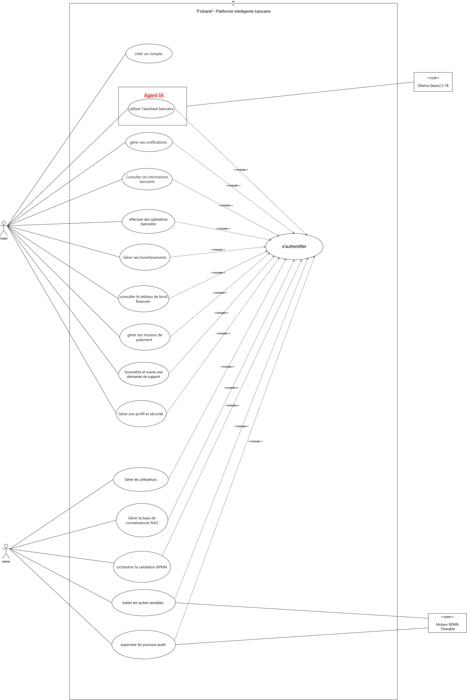
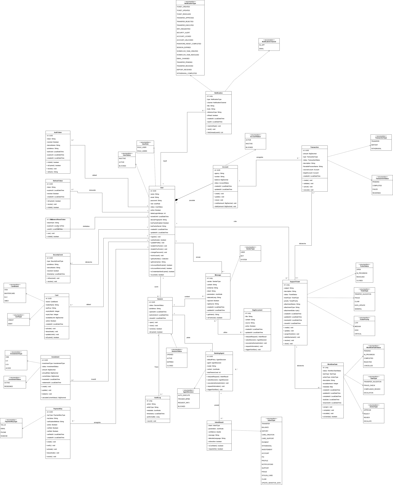

CONCEPTION · DIAGRAMMES UML
Cas d'utilisation & Diagramme de classes
Vue fonctionnelle et structure interne du système FinBank
01
Cas d'utilisation
Vue Fonctionnelle
02
Diagramme de classes
Structure Interne


100%
Structure interne →
17 / 34